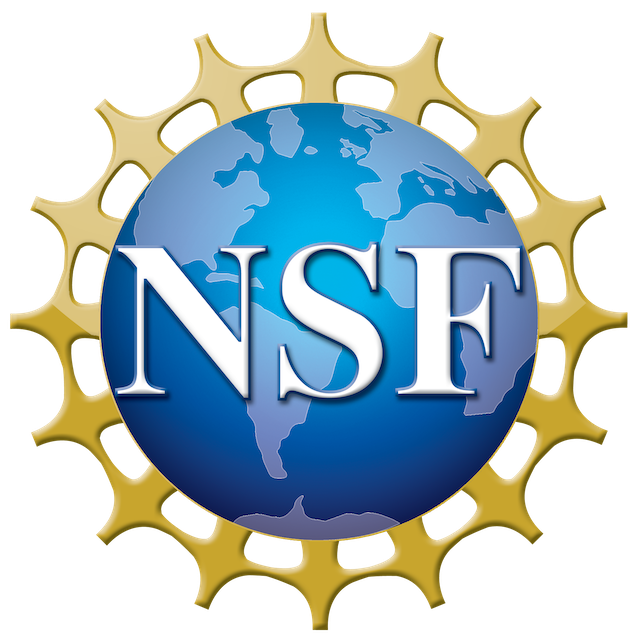
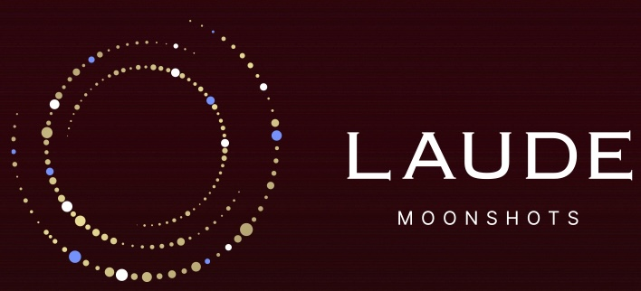
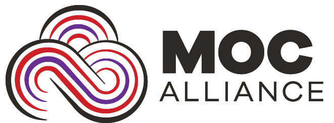

FROOT
Future-Proof, Trustworthy Telemetry for high-performance, high-availability networks.
We design and evaluate next-generation cloud and AI infrastructure to make computing robust for society.
Prof. Alan Zaoxing Liu leads the FROOT Lab in the Department of Computer Science at the University of Maryland, College Park, with appointments at UMIACS, MC2, and AIM. He describes the lab's approach simply: “I love everything networked and distributed — from networked systems and their security issues to robust algorithms that can hack large-scale problems.” The lab's mission is to make AI systems Faster, more Future-pROOf, and more Trustworthy — work recognized with the NSF CAREER Award, a USENIX FAST Best Paper Award, and “Best of Rest” honors at USENIX ATC and ACM STOC.
Future-Proof, Trustworthy Telemetry for high-performance, high-availability networks.
Optics-enabled network defenses against extreme terabit-scale DDoS attacks.
Scalable, automated diagnosis of performance, resilience, and security problems in modern CI/CD.
See all six research thrusts on the Projects page.
Awards, talks, and releases. See the full history on the News page.
Congrats to Wei, Nengneng, Sixian, and the team!
New funding to work on AI acceleration for autonomous biomanufacturing. Thanks, NSF!
Honored to receive this recognition for early-career research. Thanks, NSF!
Current sponsors


Previous sponsors

Recent systems efforts from the lab. See the full list on the Projects page.
A fault-tolerant, lossless failover library for collective communication on large AI training clusters.
Recent papers from the lab. See the full list on the Publications page.
We welcome students and collaborators interested in next-gen cloud and AI systems. Self-motivated interns and PhD applicants are especially encouraged to reach out.